Names of buttons and menu items are shown in this style, keys look like Ctrl + N, and a path such as means “open Settings, then go to the Your data section”.
You can reopen this guide at any time from .
The screenshots in this guide use made-up example entries, not anyone’s real journal.
Tideline Journal is a private place to write each day. Everything you write is encrypted with your password, and nothing leaves your computer.
The first time you start the program it asks you to choose a password. Type it twice and press Create password.
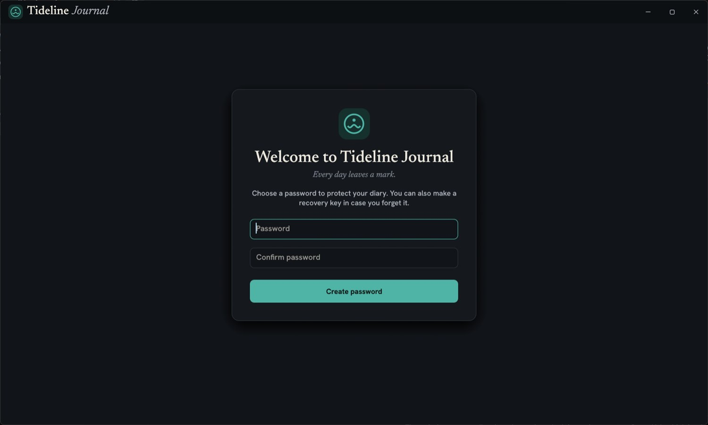
Your journal is encrypted for real. If you forget the password and have no recovery key, nobody can open it, including the people who made this program. Make a recovery key and keep it somewhere safe.
Each time the program starts it shows an unlock screen. Type your password and press Enter. Below the password box are two links: Forgot your password? (use a recovery key) and Open a different diary… (use a journal stored in another folder, such as a backup).
To lock the journal at any time, press Ctrl + L or choose Lock journal at the bottom of the side menu. Locking forgets the decrypted text. If you were in the middle of writing an entry, it is kept in memory and is still there after you unlock.
The journal also locks by itself after a period without activity, and hides itself while the window is in the background (see chapter 12).
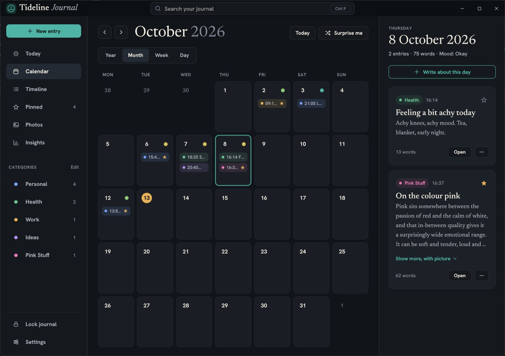
1 2 3 4You can make everything bigger or smaller with Ctrl + + and Ctrl + − (and Ctrl + 0 to reset). F11 switches full screen on and off.
The calendar shows what you have written and when. Click any day to select it and see its entries on the right.
This is the view you start in. Each day is a tile:
Use the switch under the month title (or Ctrl + 1 to Ctrl + 4).
A heat-map with one small square per day: the more you wrote, the brighter the square. Hover for the date and word count, click to select a day, double-click to open it in Day view. Underneath are your totals for the year (entries, days written, words, current and longest writing streak, average mood), entries per category and a chart of your mood through the year.
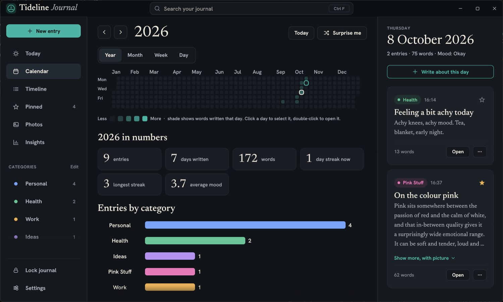
Seven tall columns, one per day, with more room for each entry’s chip.
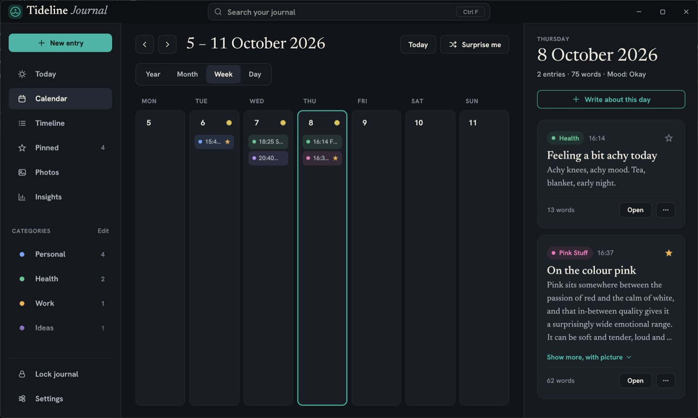
The selected day hour by hour. Entries sit in the hour they were written.
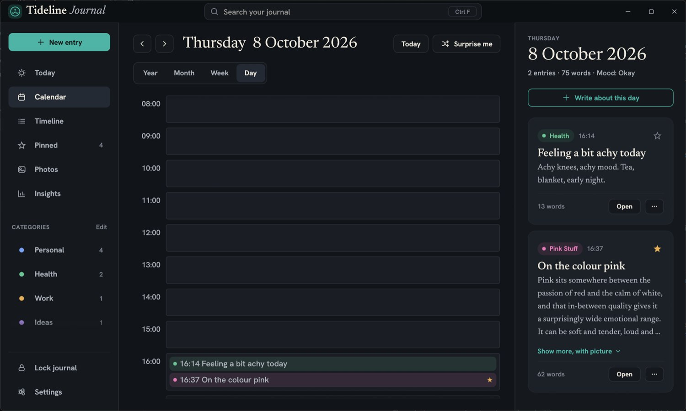
| To do this | Do this |
|---|---|
| Step back or forward | The ‹ and › buttons, or the ← and → keys. In Month view this moves a month; in Week, a week; in Day, a day; in Year, a year. |
| Jump to today | Today (top right of the calendar), the Today item in the side menu, or Ctrl + T. |
| Look back at random | Surprise me or Ctrl + R jumps to a random entry from the past. Private entries are never chosen. |
| Change view | The Year / Month / Week / Day switch, or Ctrl + 1 (Day), 2 (Week), 3 (Month), 4 (Year). |
To move an entry to another day, press on its chip and drag it onto the day you want; a teal outline shows where it will land. The time of day is kept. In Day view you can drag an entry to another hour to change its time. Press Esc to cancel a drag.
Double-click a day to write a new entry for it, or double-click an entry’s chip to edit that entry. In Day view, double-clicking an hour starts an entry at that time.
The panel on the right is your reading view for the selected day.
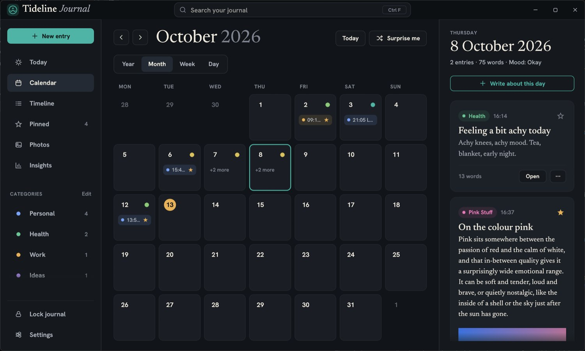
Every entry is a card showing its category, the time, a star (click it to pin or unpin), the title, a few lines of text and the word count.
Deleting an entry moves it to Recently deleted (see chapter 13). A message appears at the top of the panel with an Undo button for the one you just removed.
A private entry is shown as grey placeholder lines and “Private entry – click to show”. Click it to read it. It hides itself again when you lock the journal or leave the window.
An empty day shows a dashed box that says “A blank page.”
Underneath the cards, “On this day” lists what you wrote on the same date in earlier years. Click one to jump to it.
Writing has a whole page to itself, so there is nothing in the way.
There are several ways in: New entry in the side menu, Write about this day, Ctrl + N, double-clicking a day, or Open on an existing entry. A new entry belongs to the selected day and takes the current time.
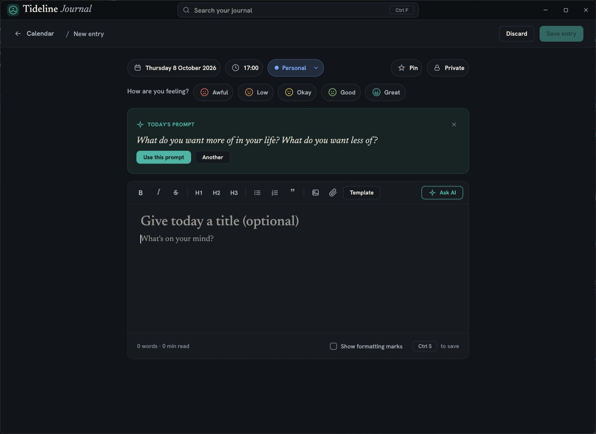
At the top, ← Calendar takes you back, Discard throws the entry away, and Save entry saves it. “Unsaved draft” tells you there are changes that are not saved yet.
The three chips at the top left set when the entry belongs and what it is about.
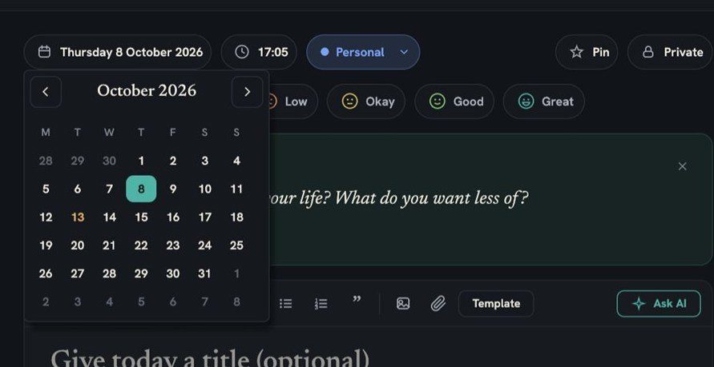
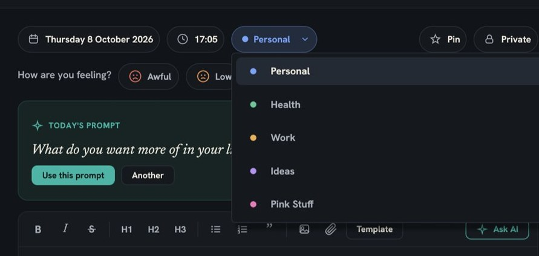
On the right, Pin stars the entry so it appears under Pinned, and Private hides it until you click it (see chapter 12). Both are switches: click again to turn them off.
Under “How are you feeling?” choose one of five moods: Awful, Low, Okay, Good or Great. The chosen mood glows in its colour. Click it again to clear it. Moods feed the dots on the calendar and the charts in Insights, but they are entirely optional.
The green card offers a question to get you started, such as “What do you want more of in your life?”.
The card stays visible while you write, so you can pick a new prompt halfway through an entry.
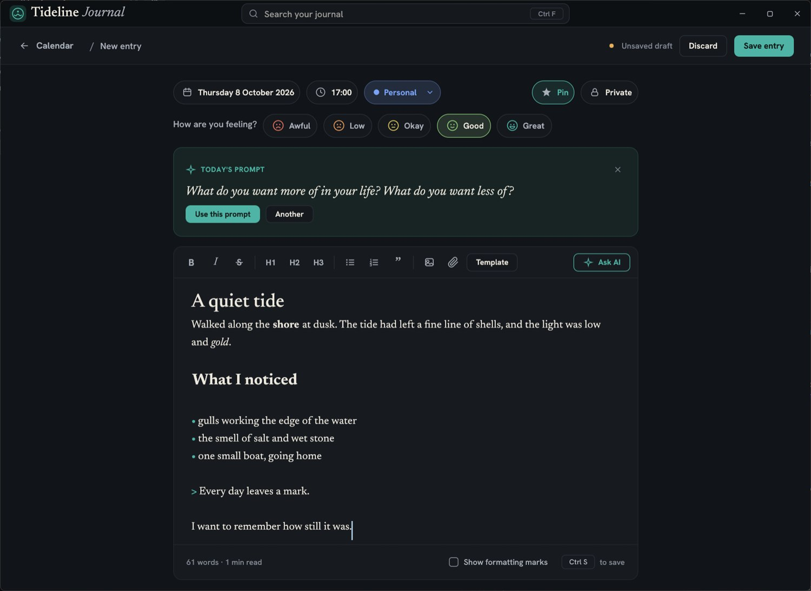
Type an optional title at the top (press Enter to move into the text), then write below it. What you see is what you get: bold looks bold, headings are large, lists have bullets. Underneath, a line shows the word count and an estimated reading time.
| Button | What it does |
|---|---|
| B I | Bold, italic and strikethrough for the selected text. Click again to remove it. Ctrl + B and Ctrl + I work too. With nothing selected, the format starts at the cursor and applies to what you type next. |
| H1 H2 H3 | Turn the line into a large, medium or small heading. Click again to turn it back into a normal paragraph. |
| • list, 1. list | Make the selected lines a bulleted or numbered list. |
| ” quote | Make the selected lines a quotation. |
| Picture | Add a picture (see below). |
| Paperclip | Attach a file (see below). |
| Template | Fill the page from a template (see below). |
| Ask AI | Optional AI helpers (see chapter 14). |
You can also type formatting as you go: **bold**, *italic*, ## Heading, - item and > quote all work, and are shown formatted straight away.
The little symbols behind formatting (such as the stars around bold text) are hidden so the page looks clean. The arrow keys, Backspace and Delete step over them as if they were not there. If you want to see them, tick Show formatting marks at the bottom of the card.
Press the picture button and choose an image, or simply drag an image file onto the window. It appears in the text where your cursor was. A Remove picture button sits under each one. Large images are shrunk to a sensible size (1,600 pixels on the longest side) and stored inside your encrypted journal. Because pictures are part of the journal file, many large pictures make it bigger and saving slower.
Press the paperclip to attach any file, up to 25 MB each, or drag a file onto the window. Attached files are listed under the card with a Remove button, and are stored inside the encrypted journal. On a day’s card you can Save as… a copy or Open it.
Open makes a temporary plain copy so another program can show it. The copy is kept in a folder beside your journal (opened-attachments-temporary) and removed when you lock the journal or next start the program.
Programs and scripts (such as .exe, .bat, .ps1, .vbs, .msi and .lnk files) can be attached and saved as a copy, but they are never opened from the journal, so a file in a journal someone else gave you cannot start a program on your PC. Such a file shows “can’t be opened here” instead of an Open button.
Press Template and choose one to fill the page with headings and questions to answer. Manage templates… opens the templates window (see chapter 10).
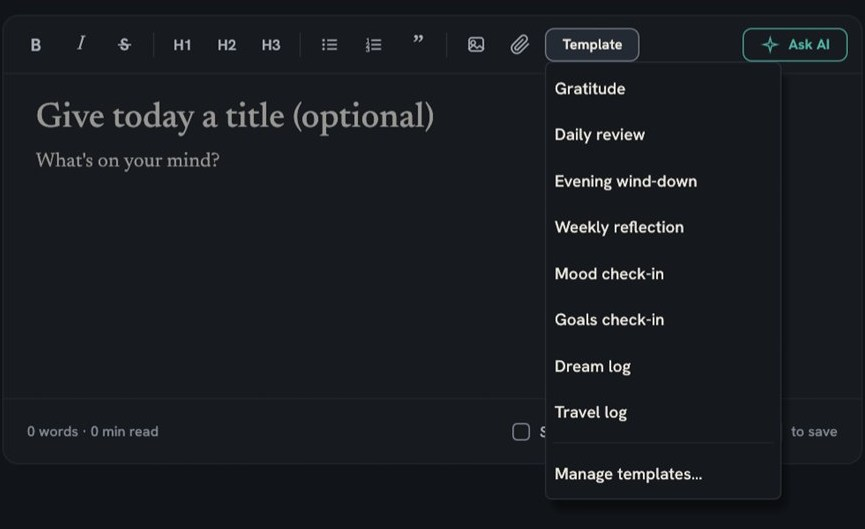
Ask AI opens a menu. If the helpers are not set up, it offers Set up AI helpers…. Once they are on, it offers to turn your rough notes into an entry and to suggest a question to think about (see chapter 14).
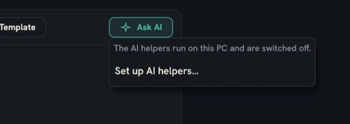
Press Open on its card, or double-click its chip. You can change anything, including its date, time, category, mood and pictures. To delete it, use ⋯ → Delete on its card.
Search the whole journal in a moment, or browse everything newest first.
Click the search box at the top (or press Ctrl + F) and start typing. The day panel is replaced by the results as you type, and matching words are highlighted. Click a result to jump to its day.
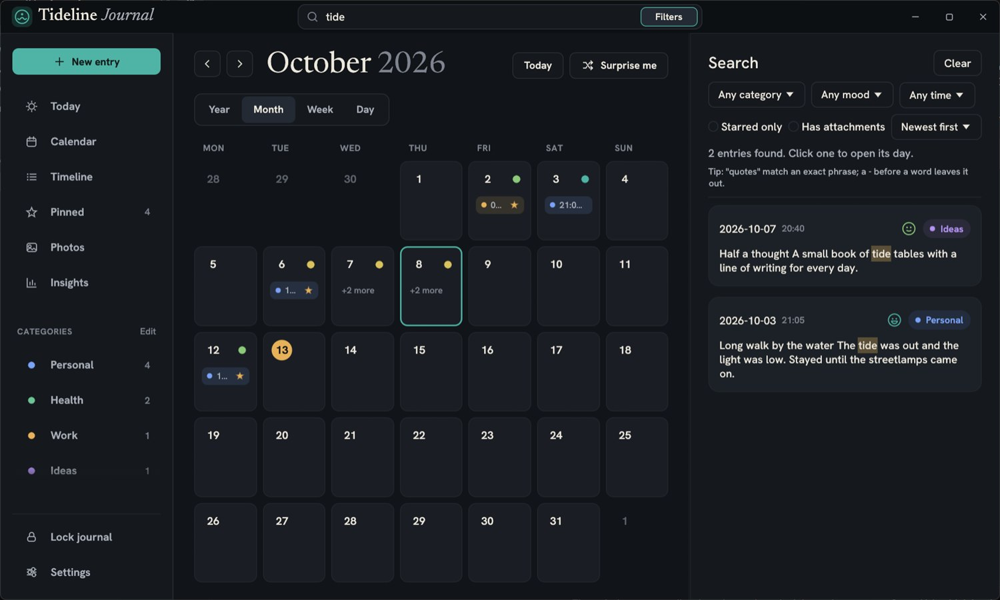
| You type | It finds |
|---|---|
| river walk | Entries containing both words, in any order and any capitals. |
| "river walk" | Entries with that exact phrase. |
| river -work | Entries with “river” but not “work”. |
Search also looks at category names, dates (such as 2026-10) and attachment file names. Private entries are never found by their text; they can only turn up by category or date.
Press Filters in the search box, or just start with the filters and no words at all. You can narrow results by:
Clear (top right of the results) empties the search and the filters and returns to the day view.
Timeline in the side menu lists every entry, newest first, in the same results panel. It is the quickest way to scroll back through everything.
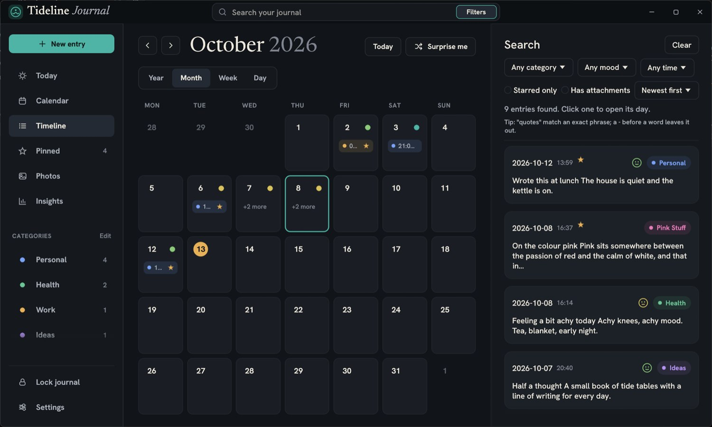
Each category in the side menu shows how many entries it holds. Click one to see only that category’s entries. Edit next to “Categories” opens the category editor (see chapter 9).
Star the entries you want to be able to find again in a second.
Pin an entry by clicking the star on its card, using the Pin switch while writing, or pressing Ctrl + D in the writing page. Pinned entries carry a star on the calendar. Pinned in the side menu opens them all on one page.
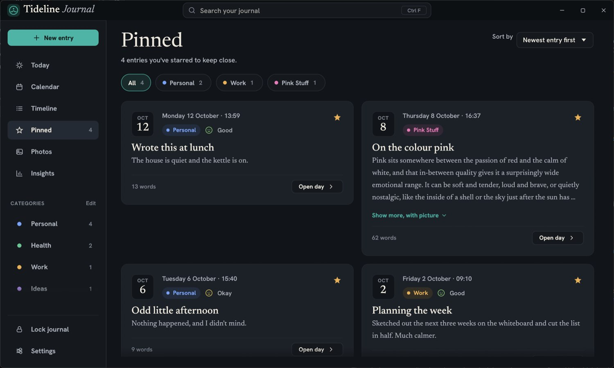
Every picture you have added, in one place.
Photos in the side menu shows all the pictures in your journal as thumbnails, newest first, grouped by month.
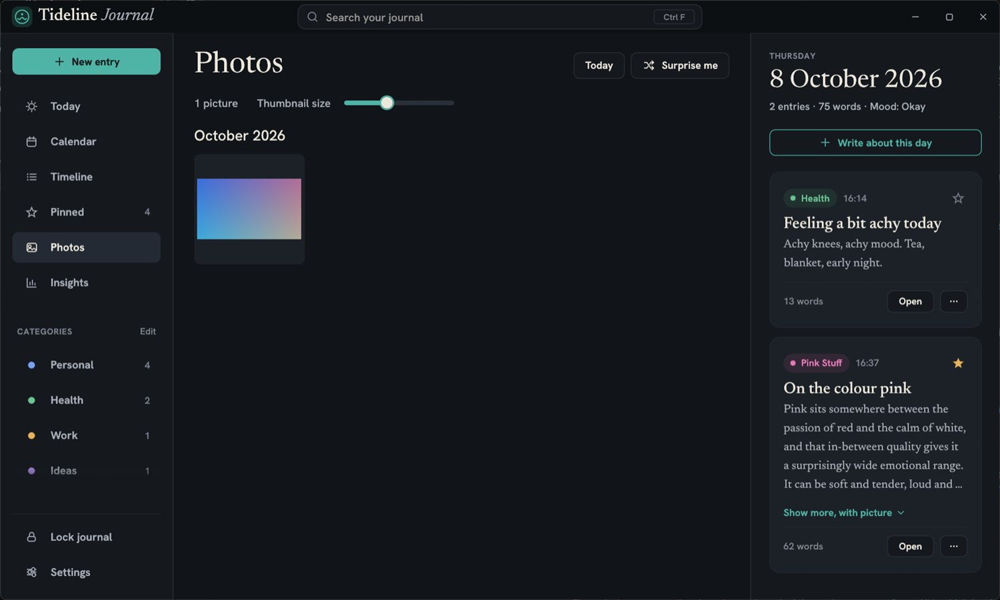
Patterns in how you feel and how you write, worked out from your own entries and shown only to you.
Choose Insights in the side menu. At the top right, switch the range between 30 days, 90 days, This year and All time. There are three tabs.
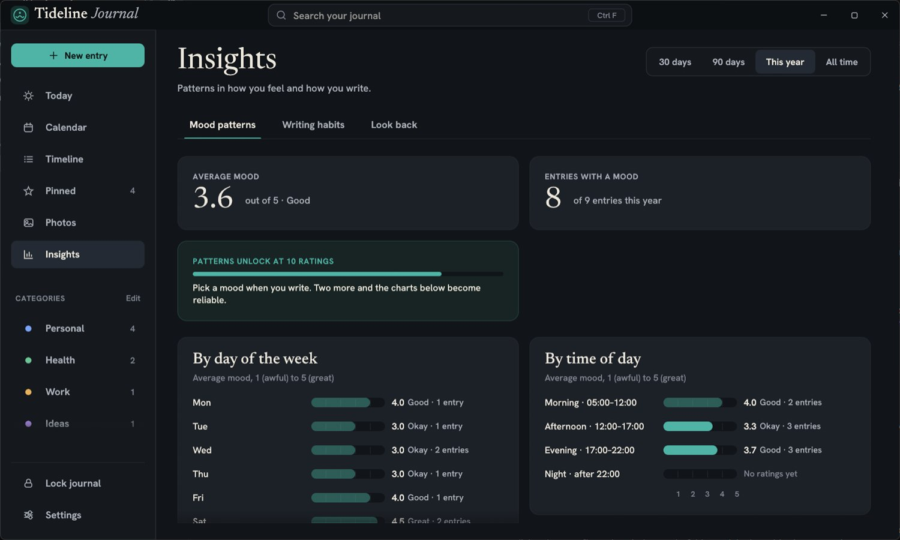
These are patterns in your own ratings, not causes. A quiet bar may simply mean you rarely wrote at that time.
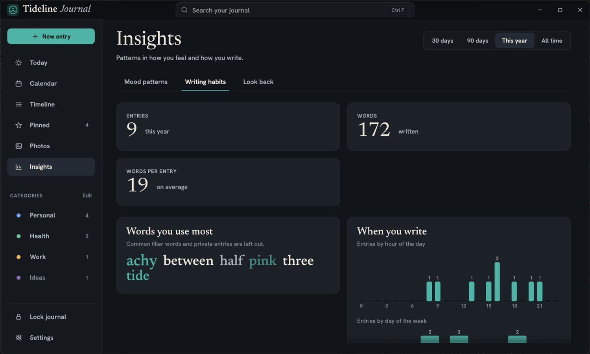
Totals for entries, words and words per entry; the words you use most (bigger means more often; everyday filler words and private entries are left out); charts of when you write by hour of the day and day of the week; and your longest entries (click one to jump to it).
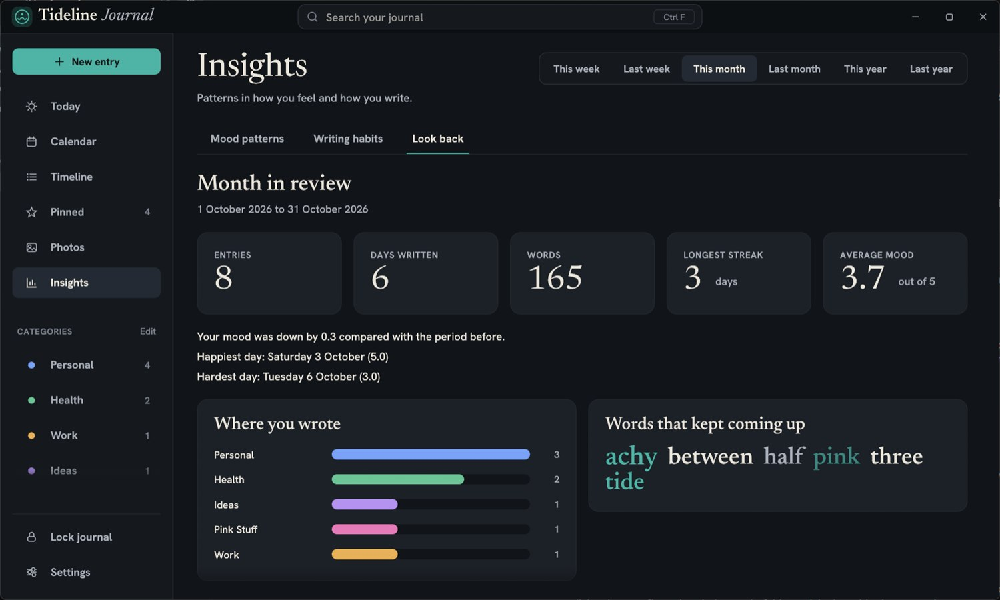
A recap of a week, month or year: choose This week, Last week, This month, Last month, This year or Last year at the top right. You get your totals, how your mood compared with the period before, your happiest and hardest days, where you wrote, words that kept coming up, pictures from the period, and entries to remember. Save this review as a PDF… at the bottom makes a printable copy.
Categories are the coloured labels that say what an entry is about.
Open the editor with Edit next to “Categories” in the side menu.
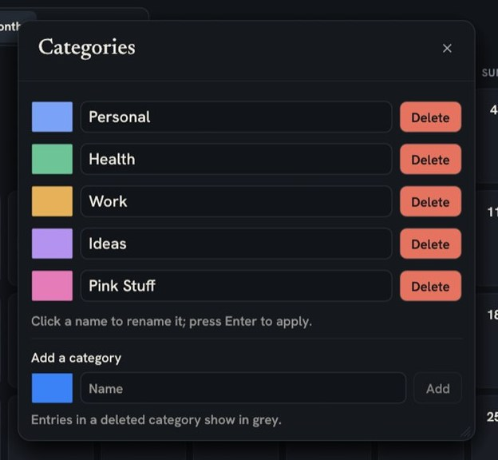
A template fills a new entry with headings and questions, so you never start from a blank page unless you want to.
Open the templates window from , or from the Template menu in the writing page.
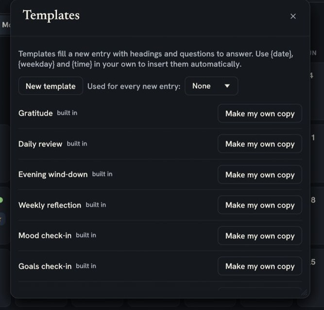
{date}, {weekday} and {time}, which are replaced automatically when the template is used.Choose Settings at the bottom of the side menu. Changes are saved as you make them.
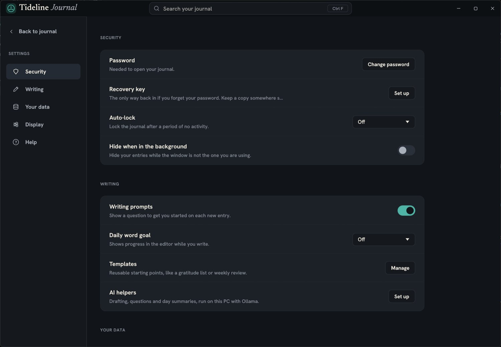
‹ Back to journal returns to the calendar. Each row has a title, a line of explanation and its control on the right.
| Setting | What it does |
|---|---|
| Password | Change password opens a window to choose a new one (at least 8 characters). |
| Recovery key | Creates, shows or replaces the key that can open your journal if you forget your password (see chapter 12). |
| Auto-lock | Locks the journal after no activity for: Off, 1, 5, 10 (the default) or 30 minutes. |
| Hide when in the background | Blanks the window while you are using another program or it is minimised. |
| Setting | What it does |
|---|---|
| Writing prompts | Shows or hides the prompt card in the writing page. |
| Daily word goal | Off, 100, 250, 500, 750 or 1,000 words. Progress shows on the day panel and in the writing page. |
| Templates | Manage opens the templates window. |
| AI helpers | Set up (or Manage) opens the optional helpers (see chapter 14). |
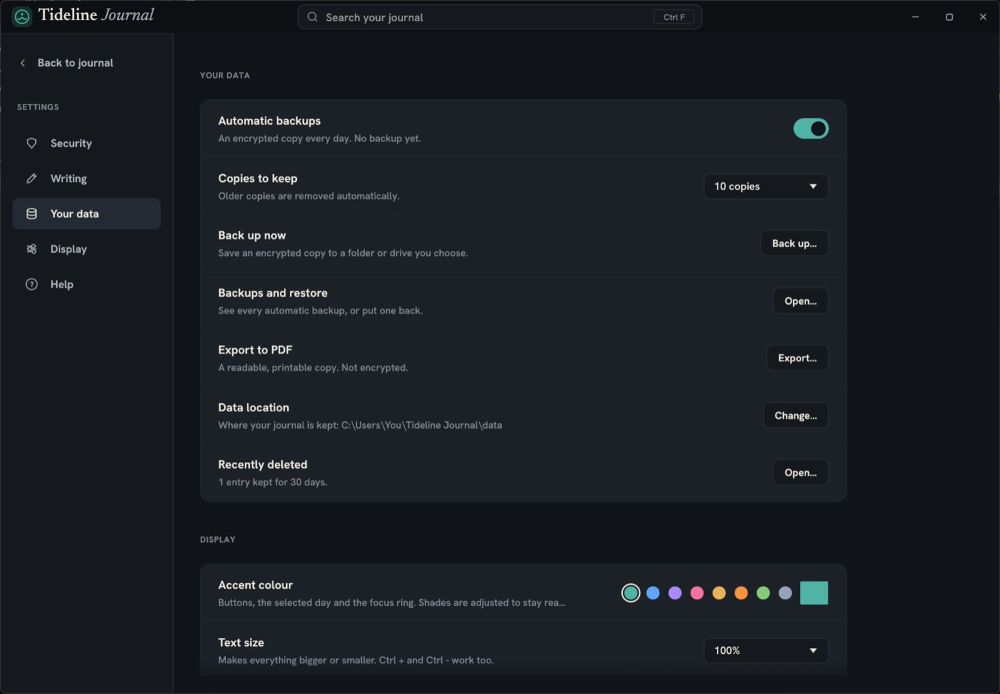
| Setting | What it does |
|---|---|
| Automatic backups | Switches the daily encrypted copy on or off, and shows the date of the last one. |
| Copies to keep | How many automatic backups to keep: 5, 10, 20, 30 or 60. Older ones are removed. |
| Back up now | Back up… saves an encrypted copy wherever you choose, such as a USB drive. |
| Backups and restore | Opens the list of automatic backups, where you can restore or delete one. |
| Export to PDF | Makes a readable, printable copy of some or all entries (not encrypted). |
| Data location | Shows where the journal is stored, and lets you move it or open one from another folder. |
| Recently deleted | The 30-day bin for deleted entries. |
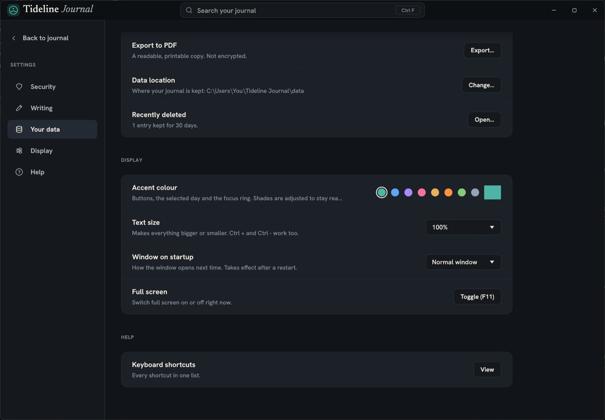
| Setting | What it does |
|---|---|
| Accent colour | The one colour you can change. Pick one of eight (Tide, Sky, Violet, Rose, Lamp, Ember, Moss, Slate) or press the colour square to choose any colour you like. It is used for buttons, the selected day and highlights, and is automatically adjusted so text always stays easy to read. |
| Text size | 80% to 160%. Ctrl + +, Ctrl + − and Ctrl + 0 change it from anywhere. |
| Window on startup | Normal window, Maximised or Full screen. It takes effect the next time you start the program. |
| Full screen | Toggle (F11) switches full screen on or off right now. |
| Setting | What it does |
|---|---|
| User guide | Saves or opens this guide as a PDF. |
| Keyboard shortcuts | View lists every shortcut. |
Your journal is encrypted on disk and never sent anywhere. These are the tools that keep it that way.
Your entries, pictures and files are sealed with strong encryption (XChaCha20-Poly1305) under a key that is itself protected by your password (Argon2id). Without the password, the file is unreadable noise. To change it, use , type the new password twice and press Change password.
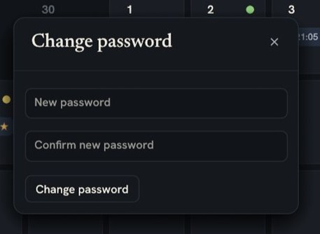
A recovery key is a long code, shown once, that can open your journal if you forget your password. Open .
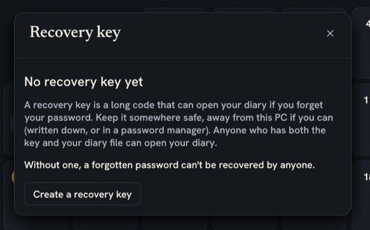
Later the same window lets you make a new key (the old one stops working) or remove the key. Each of these needs a second click to confirm.
Anyone who has both your recovery key and your journal file can open your journal, so keep the key private. If you have no recovery key and forget your password, the journal cannot be recovered by anyone.
Switch on Private while writing and the entry is hidden until you click it. While hidden, its text, mood, pictures and search matches are not shown. It hides again when you lock the journal or leave the window. Private entries are also left out of searches by text, Surprise me, Insights, PDF exports (unless you ask for them) and the AI helpers.
Auto-lock locks the journal after a period of no activity (10 minutes unless you change it). Hide when in the background blanks the whole window as soon as you switch to another program or minimise it, so no one can read it over your shoulder when you step away. Click the window to show it again.
Where your journal lives, how to back it up and how to get things back.
By default your journal is in a folder called data beside the program. Inside it are entries.json (your encrypted journal), backups (automatic copies) and config.json (a few settings that are needed before you unlock). The folder is easy to find and copy.
Open to see exactly where it is.
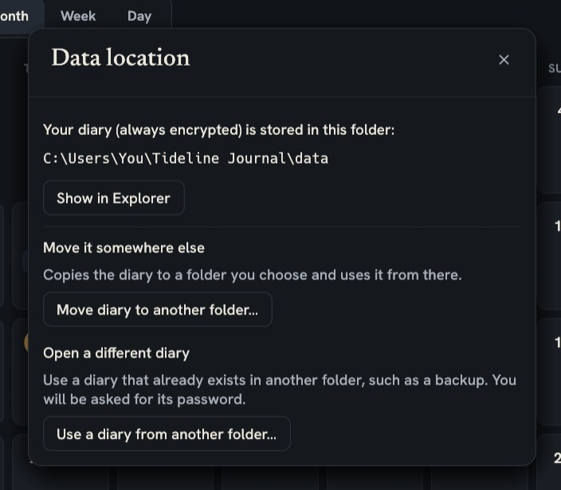
The first time you open the journal each day, and only if it has changed, a dated copy of the encrypted file is saved in the backups folder. They are encrypted exactly like your journal, so they are safe to keep and to copy elsewhere. Choose how many to keep under (the default is 10).
shows the list.
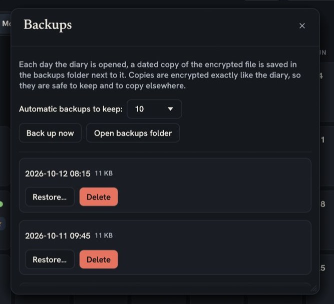
Automatic backups live next to the journal, so they won’t help if the whole drive is lost. Use Back up… now and then to save a copy to a different drive.
or Ctrl + E makes a printable PDF.
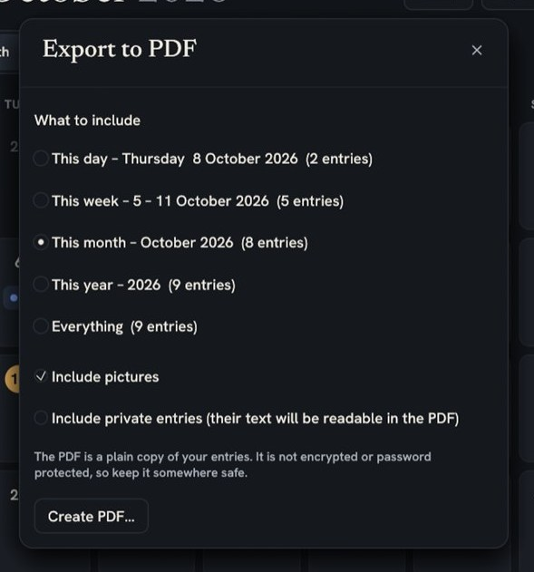
A PDF export is not encrypted or password protected. Keep it somewhere safe, and delete it when you no longer need it.
Deleting an entry moves it here for 30 days, then it is removed for good. Open it from .
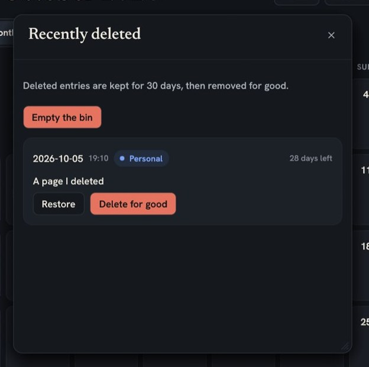
The program is a single file, tideline-journal.exe, and needs no installer. Copy it, together with the data folder, onto a USB drive and run it from there on any Windows PC: your journal stays on the drive.
data folder (not onto the PC you are visiting) and removed when you lock.Three optional helpers that run entirely on your own computer. They are off until you set them up.
Open . The window walks you through three steps.
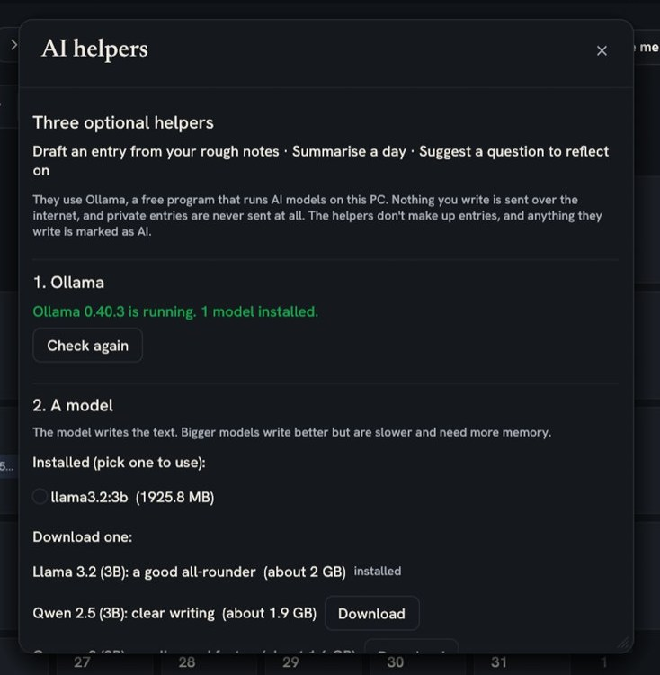
The first answer can take a minute while the model loads into memory. The helpers are entirely optional; the rest of the program works the same without them.
You can do almost everything without the mouse.
| Keys | Action |
|---|---|
| Ctrl + N | New entry on the selected day |
| Ctrl + F | Search entries |
| Ctrl + T | Jump to today |
| Ctrl + R | Jump to a random entry (Surprise me) |
| Ctrl + L | Lock the journal |
| Ctrl + E | Export entries to PDF |
| F11 | Full screen on or off (also works on the unlock screen) |
| Ctrl + + / Ctrl + − | Bigger or smaller text (Ctrl + 0 resets) |
| Keys | Action |
|---|---|
| ← / → | Previous or next month, week, day or year |
| Ctrl + 1 … 5 | Day, Week, Month, Year and Photos view |
| Double-click | On a day: new entry. On an entry: edit it |
| Drag | Move an entry to another day or hour |
| Esc | Cancel a drag |
| Keys | Action |
|---|---|
| Ctrl + S or Ctrl + Enter | Save the entry |
| Ctrl + D | Pin or unpin the entry |
| Ctrl + B / Ctrl + I | Bold / italic |
| Enter (in the title) | Move into the text |
| Click again | A mood button or toolbar format switches itself off |
If you made a recovery key, use Forgot your password? on the unlock screen (see chapter 12). Without a recovery key there is no way back in, which is what keeps your journal private. If you have an older backup whose password you remember, Open a different diary… can open it.
“Hide when in the background” blanks the window while it is not the one you are using. Click the window to show it again, or turn the setting off under .
That is Auto-lock. Enter your password to continue; anything you were writing is still there. You can lengthen or turn off Auto-lock under .
Press Undo at the top of the day panel straight away, or open and press Restore. Entries stay there for 30 days.
Try Timeline or search with fewer words. Check that no filter is switched on in the search box, and remember private entries can’t be found by their text. They show on their day as “Private entry”.
The journal folder may be on a drive that is full, read-only or no longer plugged in. Check the drive, or use to see where the journal is meant to be.
A backup keeps the password it had when it was made. Use that password (or its recovery key).
The program is not code-signed. In the “Windows protected your PC” window choose More info → Run anyway. If Windows refuses outright because Smart App Control is on, you can use the program on a PC where that is switched off.
PDF exports use the fonts installed on your PC. Characters those fonts don’t have, such as some emoji, show as boxes.
. You can open it, or save a copy anywhere you like.
Write a little, often. Every day leaves a mark.